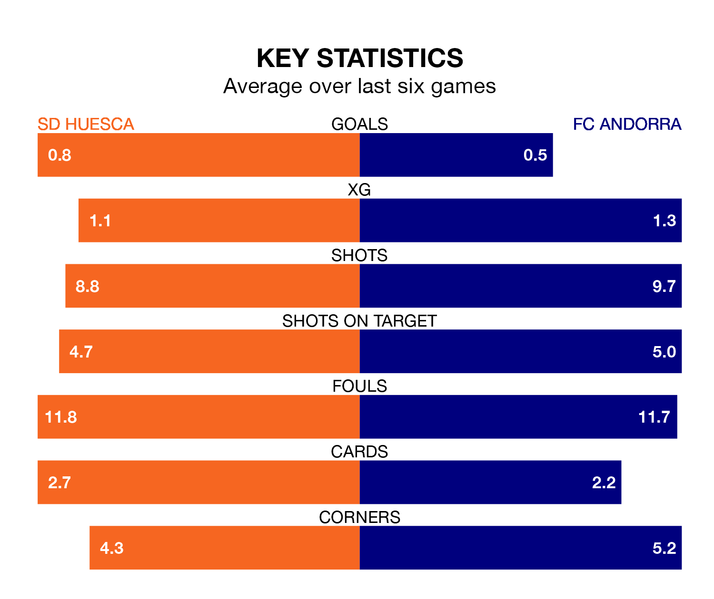

Struggling FC Andorra face SD Huesca away at the Estadio El Alcoraz on Friday looking to build on a win in their last league outing.
After securing all three points with a 2-1 victory over Real Valladolid on Sunday, Andorra sit 21st in the Segunda División.
They travel to play a Huesca side 15th in the standings, who were held in their last match, 0-0 against RCD Espanyol, on March 2.
In Álvaro Fernández, Huesca can rely on one of the league's safest pair of hands. He has kept 13 clean sheets in his 29 appearances this season, and no 'keeper has prevented the opposition scoring more often in the Segunda División.
In Andorra's net, Dani Martín has seven clean sheets in 16 games. He has conceded a goal every 90 minutes, 50% more often than the 131 minutes between goals for Fernández Llorente.
The hosts are in mixed form in the Segunda División, with two wins and four draws from their last six games.
With a win and two draws over that period, the away team's form is worse – they have taken five points from 18, compared to Huesca's 10.
In the last five years, Huesca and Andorra have played each other on five occasions. Huesca won two of them and Andorra three.
On average, Huesca scored 0.8 goals and Andorra 0.8 in those matches.
Their last meeting was on December 3, when Andorra won 1-0 at home.
With 23 goals in 29 games so far this season, Huesca are the league's third-lowest scorers with 0.8 goals per game. But they are conceding fewer than average too, letting in 22 goals at a rate of 0.8 per game.
Andorra are also below average scorers, with 0.9 goals per game, compared to a league average of 1.1. They have conceded 1.3 goals per game.
Updated: 09:34 (UTC), 08/03/24